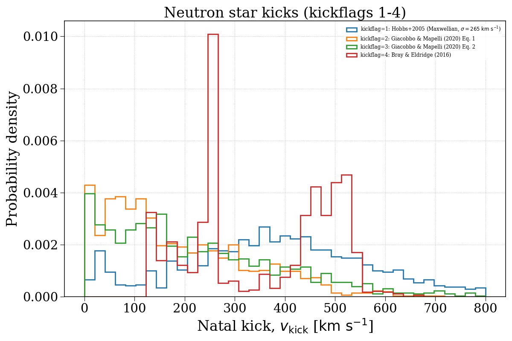
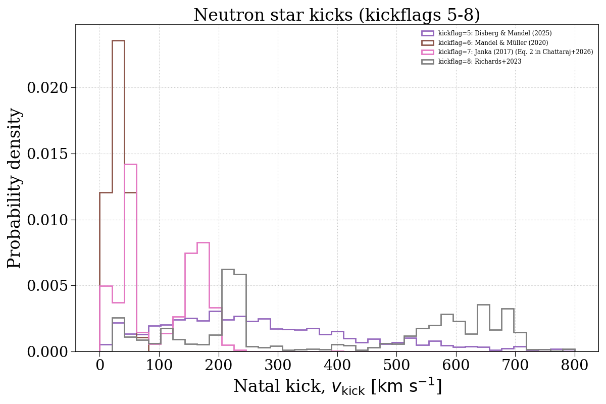
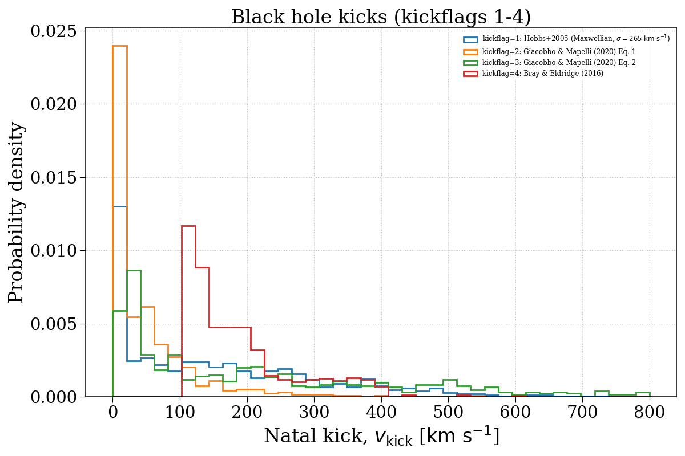
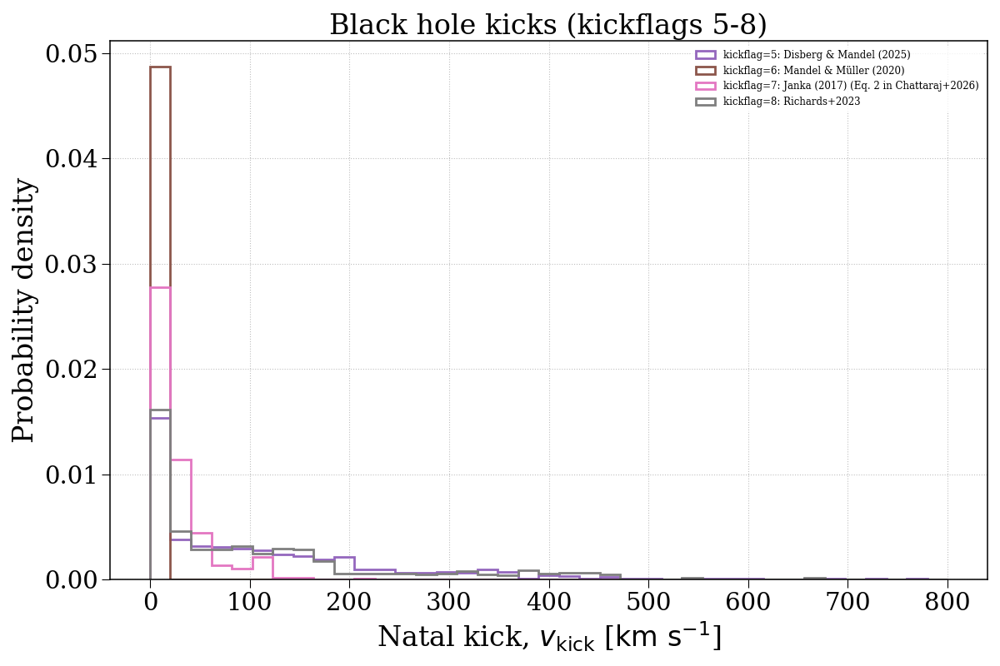

Note
Go to the end to download the full example code.
kickflag¶
This example demonstrates how changing the kickflag parameter can affect the natal kick velocity distributions of compact objects. We separate this into neutron stars and black holes.




Evolving population with kickflag = 1...
Evolving: 0%| | 0/2006 [00:00<?, ?sys/s]
Evolving: 1%| | 11/2006 [00:00<00:36, 53.99sys/s]
Evolving: 2%|▏ | 37/2006 [00:00<00:16, 122.86sys/s]
Evolving: 3%|▎ | 60/2006 [00:00<00:12, 155.82sys/s]
Evolving: 4%|▍ | 78/2006 [00:00<00:12, 160.01sys/s]
Evolving: 5%|▍ | 96/2006 [00:00<00:13, 136.50sys/s]
Evolving: 6%|▌ | 117/2006 [00:00<00:12, 152.10sys/s]
Evolving: 7%|▋ | 134/2006 [00:00<00:13, 136.45sys/s]
Evolving: 7%|▋ | 149/2006 [00:01<00:13, 135.22sys/s]
Evolving: 8%|▊ | 166/2006 [00:01<00:13, 133.20sys/s]
Evolving: 9%|▉ | 180/2006 [00:01<00:16, 112.13sys/s]
Evolving: 10%|▉ | 200/2006 [00:01<00:18, 96.57sys/s]
Evolving: 12%|█▏ | 233/2006 [00:01<00:12, 139.65sys/s]
Evolving: 12%|█▏ | 250/2006 [00:01<00:12, 135.96sys/s]
Evolving: 13%|█▎ | 268/2006 [00:02<00:12, 144.76sys/s]
Evolving: 14%|█▍ | 286/2006 [00:02<00:11, 150.68sys/s]
Evolving: 15%|█▌ | 303/2006 [00:02<00:12, 139.23sys/s]
Evolving: 16%|█▌ | 321/2006 [00:02<00:11, 146.15sys/s]
Evolving: 17%|█▋ | 337/2006 [00:02<00:16, 103.29sys/s]
Evolving: 19%|█▊ | 373/2006 [00:02<00:12, 131.38sys/s]
Evolving: 19%|█▉ | 388/2006 [00:03<00:13, 116.38sys/s]
Evolving: 21%|██ | 416/2006 [00:03<00:13, 114.61sys/s]
Evolving: 22%|██▏ | 437/2006 [00:03<00:12, 130.26sys/s]
Evolving: 23%|██▎ | 452/2006 [00:03<00:12, 127.74sys/s]
Evolving: 23%|██▎ | 466/2006 [00:03<00:14, 105.45sys/s]
Evolving: 25%|██▍ | 493/2006 [00:03<00:13, 108.24sys/s]
Evolving: 26%|██▌ | 521/2006 [00:04<00:10, 138.68sys/s]
Evolving: 27%|██▋ | 538/2006 [00:04<00:12, 114.00sys/s]
Evolving: 28%|██▊ | 560/2006 [00:04<00:11, 128.32sys/s]
Evolving: 29%|██▊ | 575/2006 [00:04<00:11, 120.45sys/s]
Evolving: 29%|██▉ | 589/2006 [00:04<00:12, 117.53sys/s]
Evolving: 31%|███ | 612/2006 [00:04<00:09, 142.21sys/s]
Evolving: 31%|███▏ | 628/2006 [00:05<00:13, 103.39sys/s]
Evolving: 32%|███▏ | 651/2006 [00:05<00:10, 126.76sys/s]
Evolving: 33%|███▎ | 667/2006 [00:05<00:10, 126.81sys/s]
Evolving: 34%|███▍ | 682/2006 [00:05<00:12, 107.10sys/s]
Evolving: 35%|███▌ | 708/2006 [00:05<00:09, 137.08sys/s]
Evolving: 36%|███▌ | 726/2006 [00:05<00:08, 144.26sys/s]
Evolving: 37%|███▋ | 743/2006 [00:05<00:09, 130.62sys/s]
Evolving: 38%|███▊ | 760/2006 [00:06<00:09, 133.25sys/s]
Evolving: 39%|███▉ | 779/2006 [00:06<00:08, 145.07sys/s]
Evolving: 40%|███▉ | 795/2006 [00:06<00:08, 146.19sys/s]
Evolving: 40%|████ | 812/2006 [00:06<00:08, 147.09sys/s]
Evolving: 41%|████▏ | 828/2006 [00:06<00:08, 136.75sys/s]
Evolving: 42%|████▏ | 844/2006 [00:06<00:10, 106.76sys/s]
Evolving: 44%|████▎ | 873/2006 [00:06<00:09, 116.69sys/s]
Evolving: 45%|████▌ | 903/2006 [00:07<00:07, 150.98sys/s]
Evolving: 46%|████▌ | 921/2006 [00:07<00:07, 154.50sys/s]
Evolving: 47%|████▋ | 938/2006 [00:07<00:06, 153.91sys/s]
Evolving: 48%|████▊ | 955/2006 [00:07<00:07, 148.74sys/s]
Evolving: 48%|████▊ | 972/2006 [00:07<00:06, 150.65sys/s]
Evolving: 49%|████▉ | 989/2006 [00:07<00:06, 145.87sys/s]
Evolving: 50%|█████ | 1004/2006 [00:07<00:08, 118.88sys/s]
Evolving: 51%|█████▏ | 1032/2006 [00:07<00:06, 146.29sys/s]
Evolving: 52%|█████▏ | 1048/2006 [00:08<00:08, 112.96sys/s]
Evolving: 54%|█████▎ | 1078/2006 [00:08<00:06, 148.68sys/s]
Evolving: 55%|█████▍ | 1096/2006 [00:08<00:05, 155.27sys/s]
Evolving: 56%|█████▌ | 1114/2006 [00:08<00:06, 146.44sys/s]
Evolving: 56%|█████▋ | 1131/2006 [00:08<00:06, 142.56sys/s]
Evolving: 57%|█████▋ | 1148/2006 [00:08<00:05, 146.36sys/s]
Evolving: 58%|█████▊ | 1164/2006 [00:08<00:05, 146.56sys/s]
Evolving: 59%|█████▉ | 1180/2006 [00:09<00:07, 111.55sys/s]
Evolving: 60%|█████▉ | 1195/2006 [00:09<00:06, 119.84sys/s]
Evolving: 61%|██████ | 1214/2006 [00:09<00:05, 133.98sys/s]
Evolving: 61%|██████▏ | 1230/2006 [00:09<00:05, 140.33sys/s]
Evolving: 62%|██████▏ | 1246/2006 [00:09<00:08, 94.83sys/s]
Evolving: 63%|██████▎ | 1268/2006 [00:09<00:06, 108.30sys/s]
Evolving: 65%|██████▍ | 1296/2006 [00:09<00:05, 139.70sys/s]
Evolving: 65%|██████▌ | 1313/2006 [00:10<00:04, 142.21sys/s]
Evolving: 66%|██████▋ | 1330/2006 [00:10<00:06, 111.71sys/s]
Evolving: 67%|██████▋ | 1354/2006 [00:10<00:05, 129.38sys/s]
Evolving: 68%|██████▊ | 1369/2006 [00:10<00:05, 127.00sys/s]
Evolving: 69%|██████▉ | 1388/2006 [00:10<00:04, 141.01sys/s]
Evolving: 70%|██████▉ | 1404/2006 [00:10<00:04, 142.68sys/s]
Evolving: 71%|███████ | 1420/2006 [00:10<00:04, 141.00sys/s]
Evolving: 72%|███████▏ | 1435/2006 [00:11<00:04, 116.11sys/s]
Evolving: 73%|███████▎ | 1459/2006 [00:11<00:04, 111.33sys/s]
Evolving: 74%|███████▍ | 1492/2006 [00:11<00:03, 147.69sys/s]
Evolving: 75%|███████▌ | 1509/2006 [00:11<00:03, 139.03sys/s]
Evolving: 76%|███████▌ | 1526/2006 [00:11<00:03, 142.01sys/s]
Evolving: 77%|███████▋ | 1541/2006 [00:11<00:03, 138.01sys/s]
Evolving: 78%|███████▊ | 1559/2006 [00:11<00:03, 147.47sys/s]
Evolving: 79%|███████▊ | 1575/2006 [00:12<00:03, 127.06sys/s]
Evolving: 79%|███████▉ | 1589/2006 [00:12<00:03, 117.04sys/s]
Evolving: 80%|████████ | 1612/2006 [00:12<00:02, 141.14sys/s]
Evolving: 81%|████████ | 1628/2006 [00:12<00:02, 136.41sys/s]
Evolving: 82%|████████▏ | 1644/2006 [00:12<00:02, 136.79sys/s]
Evolving: 83%|████████▎ | 1659/2006 [00:12<00:03, 103.19sys/s]
Evolving: 84%|████████▎ | 1676/2006 [00:12<00:03, 107.08sys/s]
Evolving: 85%|████████▌ | 1707/2006 [00:13<00:02, 144.66sys/s]
Evolving: 86%|████████▌ | 1724/2006 [00:13<00:01, 150.24sys/s]
Evolving: 87%|████████▋ | 1741/2006 [00:13<00:02, 119.25sys/s]
Evolving: 88%|████████▊ | 1761/2006 [00:13<00:01, 123.78sys/s]
Evolving: 89%|████████▊ | 1780/2006 [00:13<00:01, 137.19sys/s]
Evolving: 90%|████████▉ | 1797/2006 [00:13<00:01, 137.17sys/s]
Evolving: 90%|█████████ | 1812/2006 [00:13<00:01, 122.03sys/s]
Evolving: 91%|█████████ | 1826/2006 [00:14<00:01, 121.42sys/s]
Evolving: 92%|█████████▏| 1848/2006 [00:14<00:01, 142.73sys/s]
Evolving: 93%|█████████▎| 1864/2006 [00:14<00:00, 145.63sys/s]
Evolving: 94%|█████████▎| 1880/2006 [00:14<00:00, 143.51sys/s]
Evolving: 95%|█████████▍| 1899/2006 [00:14<00:00, 152.92sys/s]
Evolving: 95%|█████████▌| 1915/2006 [00:14<00:00, 151.08sys/s]
Evolving: 96%|█████████▋| 1931/2006 [00:14<00:00, 153.01sys/s]
Evolving: 97%|█████████▋| 1947/2006 [00:14<00:00, 113.58sys/s]
Evolving: 98%|█████████▊| 1968/2006 [00:15<00:00, 109.59sys/s]
Evolving: 100%|█████████▉| 1998/2006 [00:15<00:00, 147.65sys/s]
Evolving: 100%|██████████| 2006/2006 [00:15<00:00, 130.69sys/s]
[Time taken: 15.6018 seconds]
Evolving population with kickflag = 2...
Evolving: 0%| | 0/2006 [00:00<?, ?sys/s]
Evolving: 0%| | 9/2006 [00:00<00:22, 89.06sys/s]
Evolving: 1%| | 18/2006 [00:00<00:31, 63.27sys/s]
Evolving: 2%|▏ | 37/2006 [00:00<00:18, 108.88sys/s]
Evolving: 3%|▎ | 56/2006 [00:00<00:14, 134.03sys/s]
Evolving: 4%|▎ | 75/2006 [00:00<00:13, 139.36sys/s]
Evolving: 5%|▍ | 95/2006 [00:00<00:12, 152.44sys/s]
Evolving: 6%|▌ | 111/2006 [00:00<00:12, 150.26sys/s]
Evolving: 6%|▋ | 127/2006 [00:01<00:15, 120.97sys/s]
Evolving: 7%|▋ | 145/2006 [00:01<00:14, 131.78sys/s]
Evolving: 8%|▊ | 166/2006 [00:01<00:13, 138.12sys/s]
Evolving: 9%|▉ | 181/2006 [00:01<00:15, 117.17sys/s]
Evolving: 10%|▉ | 194/2006 [00:01<00:15, 118.74sys/s]
Evolving: 10%|█ | 207/2006 [00:01<00:17, 101.47sys/s]
Evolving: 12%|█▏ | 236/2006 [00:01<00:12, 142.64sys/s]
Evolving: 13%|█▎ | 253/2006 [00:01<00:12, 144.03sys/s]
Evolving: 13%|█▎ | 269/2006 [00:02<00:12, 135.78sys/s]
Evolving: 15%|█▍ | 291/2006 [00:02<00:11, 153.55sys/s]
Evolving: 15%|█▌ | 308/2006 [00:02<00:11, 153.06sys/s]
Evolving: 16%|█▌ | 324/2006 [00:02<00:11, 147.29sys/s]
Evolving: 17%|█▋ | 340/2006 [00:02<00:15, 104.99sys/s]
Evolving: 19%|█▊ | 373/2006 [00:02<00:12, 134.63sys/s]
Evolving: 19%|█▉ | 388/2006 [00:03<00:14, 115.07sys/s]
Evolving: 20%|█▉ | 401/2006 [00:03<00:14, 114.62sys/s]
Evolving: 21%|██ | 416/2006 [00:03<00:13, 113.84sys/s]
Evolving: 22%|██▏ | 435/2006 [00:03<00:12, 126.68sys/s]
Evolving: 22%|██▏ | 449/2006 [00:03<00:12, 127.42sys/s]
Evolving: 23%|██▎ | 465/2006 [00:03<00:14, 104.37sys/s]
Evolving: 25%|██▍ | 493/2006 [00:03<00:13, 110.16sys/s]
Evolving: 26%|██▌ | 523/2006 [00:04<00:10, 145.53sys/s]
Evolving: 27%|██▋ | 540/2006 [00:04<00:12, 115.99sys/s]
Evolving: 28%|██▊ | 561/2006 [00:04<00:10, 133.14sys/s]
Evolving: 29%|██▉ | 577/2006 [00:04<00:11, 120.84sys/s]
Evolving: 29%|██▉ | 591/2006 [00:04<00:12, 117.02sys/s]
Evolving: 31%|███ | 613/2006 [00:04<00:10, 136.58sys/s]
Evolving: 31%|███▏ | 629/2006 [00:05<00:13, 103.50sys/s]
Evolving: 32%|███▏ | 651/2006 [00:05<00:10, 126.03sys/s]
Evolving: 33%|███▎ | 667/2006 [00:05<00:10, 126.16sys/s]
Evolving: 34%|███▍ | 682/2006 [00:05<00:13, 99.21sys/s]
Evolving: 36%|███▌ | 715/2006 [00:05<00:09, 138.93sys/s]
Evolving: 37%|███▋ | 734/2006 [00:05<00:09, 135.65sys/s]
Evolving: 37%|███▋ | 750/2006 [00:05<00:09, 133.97sys/s]
Evolving: 38%|███▊ | 770/2006 [00:06<00:08, 145.32sys/s]
Evolving: 39%|███▉ | 787/2006 [00:06<00:08, 148.39sys/s]
Evolving: 40%|████ | 805/2006 [00:06<00:08, 149.93sys/s]
Evolving: 41%|████ | 823/2006 [00:06<00:08, 137.54sys/s]
Evolving: 42%|████▏ | 838/2006 [00:06<00:08, 134.37sys/s]
Evolving: 42%|████▏ | 852/2006 [00:06<00:09, 122.11sys/s]
Evolving: 43%|████▎ | 872/2006 [00:06<00:08, 140.89sys/s]
Evolving: 44%|████▍ | 887/2006 [00:06<00:08, 129.65sys/s]
Evolving: 45%|████▌ | 903/2006 [00:07<00:08, 136.88sys/s]
Evolving: 46%|████▌ | 921/2006 [00:07<00:07, 145.89sys/s]
Evolving: 47%|████▋ | 937/2006 [00:07<00:07, 146.92sys/s]
Evolving: 48%|████▊ | 953/2006 [00:07<00:07, 143.06sys/s]
Evolving: 48%|████▊ | 971/2006 [00:07<00:06, 152.17sys/s]
Evolving: 49%|████▉ | 987/2006 [00:07<00:06, 153.58sys/s]
Evolving: 50%|█████ | 1003/2006 [00:07<00:09, 110.14sys/s]
Evolving: 51%|█████▏ | 1032/2006 [00:07<00:07, 134.64sys/s]
Evolving: 52%|█████▏ | 1047/2006 [00:08<00:08, 109.97sys/s]
Evolving: 54%|█████▎ | 1078/2006 [00:08<00:06, 145.91sys/s]
Evolving: 55%|█████▍ | 1098/2006 [00:08<00:06, 148.33sys/s]
Evolving: 56%|█████▌ | 1115/2006 [00:08<00:05, 152.56sys/s]
Evolving: 56%|█████▋ | 1132/2006 [00:08<00:06, 130.99sys/s]
Evolving: 58%|█████▊ | 1156/2006 [00:08<00:05, 150.74sys/s]
Evolving: 58%|█████▊ | 1173/2006 [00:08<00:05, 143.70sys/s]
Evolving: 59%|█████▉ | 1189/2006 [00:09<00:06, 123.39sys/s]
Evolving: 60%|█████▉ | 1203/2006 [00:09<00:07, 113.70sys/s]
Evolving: 61%|██████ | 1226/2006 [00:09<00:05, 131.02sys/s]
Evolving: 62%|██████▏ | 1240/2006 [00:09<00:05, 133.01sys/s]
Evolving: 63%|██████▎ | 1254/2006 [00:09<00:07, 105.99sys/s]
Evolving: 63%|██████▎ | 1268/2006 [00:09<00:07, 100.56sys/s]
Evolving: 64%|██████▍ | 1279/2006 [00:10<00:07, 97.74sys/s]
Evolving: 65%|██████▌ | 1310/2006 [00:10<00:04, 143.94sys/s]
Evolving: 66%|██████▌ | 1326/2006 [00:10<00:06, 107.85sys/s]
Evolving: 67%|██████▋ | 1354/2006 [00:10<00:04, 135.46sys/s]
Evolving: 68%|██████▊ | 1370/2006 [00:10<00:04, 135.57sys/s]
Evolving: 69%|██████▉ | 1387/2006 [00:10<00:04, 141.72sys/s]
Evolving: 70%|██████▉ | 1404/2006 [00:10<00:04, 144.05sys/s]
Evolving: 71%|███████ | 1423/2006 [00:10<00:03, 152.56sys/s]
Evolving: 72%|███████▏ | 1440/2006 [00:11<00:04, 129.73sys/s]
Evolving: 73%|███████▎ | 1458/2006 [00:11<00:03, 141.49sys/s]
Evolving: 73%|███████▎ | 1474/2006 [00:11<00:03, 134.34sys/s]
Evolving: 74%|███████▍ | 1490/2006 [00:11<00:03, 139.68sys/s]
Evolving: 75%|███████▌ | 1505/2006 [00:11<00:03, 132.69sys/s]
Evolving: 76%|███████▌ | 1519/2006 [00:11<00:03, 125.53sys/s]
Evolving: 77%|███████▋ | 1536/2006 [00:11<00:03, 126.84sys/s]
Evolving: 78%|███████▊ | 1558/2006 [00:12<00:03, 142.96sys/s]
Evolving: 79%|███████▊ | 1575/2006 [00:12<00:03, 132.76sys/s]
Evolving: 79%|███████▉ | 1589/2006 [00:12<00:03, 117.27sys/s]
Evolving: 80%|████████ | 1611/2006 [00:12<00:02, 136.03sys/s]
Evolving: 81%|████████ | 1626/2006 [00:12<00:02, 135.96sys/s]
Evolving: 82%|████████▏ | 1644/2006 [00:12<00:02, 143.16sys/s]
Evolving: 83%|████████▎ | 1659/2006 [00:12<00:03, 105.08sys/s]
Evolving: 84%|████████▎ | 1676/2006 [00:13<00:03, 108.46sys/s]
Evolving: 84%|████████▍ | 1693/2006 [00:13<00:02, 118.96sys/s]
Evolving: 86%|████████▌ | 1718/2006 [00:13<00:02, 141.19sys/s]
Evolving: 86%|████████▋ | 1734/2006 [00:13<00:02, 106.06sys/s]
Evolving: 88%|████████▊ | 1761/2006 [00:13<00:01, 129.76sys/s]
Evolving: 89%|████████▉ | 1781/2006 [00:13<00:01, 144.22sys/s]
Evolving: 90%|████████▉ | 1798/2006 [00:13<00:01, 147.77sys/s]
Evolving: 90%|█████████ | 1815/2006 [00:14<00:01, 133.96sys/s]
Evolving: 91%|█████████ | 1830/2006 [00:14<00:01, 128.60sys/s]
Evolving: 92%|█████████▏| 1848/2006 [00:14<00:01, 139.45sys/s]
Evolving: 93%|█████████▎| 1863/2006 [00:14<00:01, 142.08sys/s]
Evolving: 94%|█████████▎| 1878/2006 [00:14<00:00, 143.89sys/s]
Evolving: 94%|█████████▍| 1893/2006 [00:14<00:00, 142.83sys/s]
Evolving: 95%|█████████▌| 1908/2006 [00:14<00:00, 139.03sys/s]
Evolving: 96%|█████████▌| 1925/2006 [00:14<00:00, 142.46sys/s]
Evolving: 97%|█████████▋| 1941/2006 [00:15<00:00, 105.67sys/s]
Evolving: 98%|█████████▊| 1968/2006 [00:15<00:00, 114.33sys/s]
Evolving: 100%|█████████▉| 2001/2006 [00:15<00:00, 155.85sys/s]
Evolving: 100%|██████████| 2006/2006 [00:15<00:00, 129.91sys/s]
[Time taken: 15.6470 seconds]
Evolving population with kickflag = 3...
Evolving: 0%| | 0/2006 [00:00<?, ?sys/s]
Evolving: 1%| | 11/2006 [00:00<00:49, 40.16sys/s]
Evolving: 2%|▏ | 44/2006 [00:00<00:14, 135.49sys/s]
Evolving: 3%|▎ | 64/2006 [00:00<00:14, 138.60sys/s]
Evolving: 4%|▍ | 82/2006 [00:00<00:13, 147.87sys/s]
Evolving: 5%|▍ | 100/2006 [00:00<00:13, 140.97sys/s]
Evolving: 6%|▌ | 117/2006 [00:00<00:13, 142.91sys/s]
Evolving: 7%|▋ | 133/2006 [00:01<00:14, 131.36sys/s]
Evolving: 8%|▊ | 151/2006 [00:01<00:13, 136.82sys/s]
Evolving: 8%|▊ | 166/2006 [00:01<00:14, 126.64sys/s]
Evolving: 9%|▉ | 180/2006 [00:01<00:16, 112.74sys/s]
Evolving: 10%|▉ | 199/2006 [00:01<00:13, 129.55sys/s]
Evolving: 11%|█ | 213/2006 [00:01<00:16, 111.74sys/s]
Evolving: 12%|█▏ | 235/2006 [00:01<00:13, 134.08sys/s]
Evolving: 13%|█▎ | 252/2006 [00:01<00:12, 142.19sys/s]
Evolving: 13%|█▎ | 268/2006 [00:02<00:11, 146.57sys/s]
Evolving: 14%|█▍ | 284/2006 [00:02<00:11, 147.10sys/s]
Evolving: 15%|█▍ | 300/2006 [00:02<00:12, 134.08sys/s]
Evolving: 16%|█▌ | 320/2006 [00:02<00:11, 150.90sys/s]
Evolving: 17%|█▋ | 337/2006 [00:02<00:16, 101.97sys/s]
Evolving: 19%|█▊ | 373/2006 [00:02<00:11, 138.24sys/s]
Evolving: 19%|█▉ | 389/2006 [00:03<00:13, 119.03sys/s]
Evolving: 20%|██ | 403/2006 [00:03<00:13, 122.60sys/s]
Evolving: 21%|██ | 417/2006 [00:03<00:14, 113.35sys/s]
Evolving: 21%|██▏ | 430/2006 [00:03<00:13, 116.89sys/s]
Evolving: 22%|██▏ | 448/2006 [00:03<00:11, 130.78sys/s]
Evolving: 23%|██▎ | 465/2006 [00:03<00:15, 102.46sys/s]
Evolving: 25%|██▍ | 493/2006 [00:03<00:13, 109.35sys/s]
Evolving: 26%|██▌ | 525/2006 [00:04<00:13, 109.30sys/s]
Evolving: 28%|██▊ | 552/2006 [00:04<00:10, 133.41sys/s]
Evolving: 28%|██▊ | 568/2006 [00:04<00:12, 118.56sys/s]
Evolving: 29%|██▉ | 589/2006 [00:04<00:10, 130.07sys/s]
Evolving: 30%|███ | 609/2006 [00:04<00:09, 143.73sys/s]
Evolving: 31%|███ | 626/2006 [00:05<00:12, 109.51sys/s]
Evolving: 32%|███▏ | 640/2006 [00:05<00:12, 108.57sys/s]
Evolving: 33%|███▎ | 666/2006 [00:05<00:09, 134.41sys/s]
Evolving: 34%|███▍ | 682/2006 [00:05<00:11, 113.21sys/s]
Evolving: 35%|███▌ | 711/2006 [00:05<00:09, 140.67sys/s]
Evolving: 36%|███▋ | 731/2006 [00:05<00:08, 147.56sys/s]
Evolving: 37%|███▋ | 748/2006 [00:05<00:08, 145.23sys/s]
Evolving: 38%|███▊ | 764/2006 [00:06<00:09, 133.27sys/s]
Evolving: 39%|███▉ | 786/2006 [00:06<00:08, 150.98sys/s]
Evolving: 40%|████ | 803/2006 [00:06<00:07, 154.52sys/s]
Evolving: 41%|████ | 820/2006 [00:06<00:08, 147.46sys/s]
Evolving: 42%|████▏ | 836/2006 [00:06<00:08, 140.60sys/s]
Evolving: 42%|████▏ | 851/2006 [00:06<00:09, 122.17sys/s]
Evolving: 44%|████▎ | 873/2006 [00:06<00:10, 110.28sys/s]
Evolving: 45%|████▍ | 902/2006 [00:07<00:07, 146.77sys/s]
Evolving: 46%|████▌ | 919/2006 [00:07<00:07, 149.77sys/s]
Evolving: 47%|████▋ | 936/2006 [00:07<00:07, 151.23sys/s]
Evolving: 48%|████▊ | 953/2006 [00:07<00:07, 148.55sys/s]
Evolving: 48%|████▊ | 970/2006 [00:07<00:06, 150.87sys/s]
Evolving: 49%|████▉ | 988/2006 [00:07<00:06, 156.89sys/s]
Evolving: 50%|█████ | 1005/2006 [00:07<00:08, 115.61sys/s]
Evolving: 51%|█████▏ | 1032/2006 [00:07<00:06, 140.65sys/s]
Evolving: 52%|█████▏ | 1048/2006 [00:08<00:08, 109.49sys/s]
Evolving: 54%|█████▍ | 1080/2006 [00:08<00:06, 148.29sys/s]
Evolving: 55%|█████▍ | 1098/2006 [00:08<00:06, 149.63sys/s]
Evolving: 56%|█████▌ | 1116/2006 [00:08<00:06, 141.64sys/s]
Evolving: 56%|█████▋ | 1132/2006 [00:08<00:06, 135.95sys/s]
Evolving: 57%|█████▋ | 1149/2006 [00:08<00:06, 138.47sys/s]
Evolving: 58%|█████▊ | 1165/2006 [00:08<00:05, 141.92sys/s]
Evolving: 59%|█████▉ | 1180/2006 [00:09<00:07, 110.60sys/s]
Evolving: 60%|█████▉ | 1202/2006 [00:09<00:06, 133.79sys/s]
Evolving: 61%|██████ | 1218/2006 [00:09<00:05, 133.60sys/s]
Evolving: 61%|██████▏ | 1233/2006 [00:09<00:06, 120.01sys/s]
Evolving: 62%|██████▏ | 1247/2006 [00:09<00:07, 96.87sys/s]
Evolving: 63%|██████▎ | 1268/2006 [00:09<00:07, 104.41sys/s]
Evolving: 65%|██████▍ | 1296/2006 [00:10<00:05, 136.87sys/s]
Evolving: 66%|██████▌ | 1315/2006 [00:10<00:04, 144.15sys/s]
Evolving: 66%|██████▋ | 1331/2006 [00:10<00:05, 115.02sys/s]
Evolving: 67%|██████▋ | 1354/2006 [00:10<00:05, 126.92sys/s]
Evolving: 68%|██████▊ | 1369/2006 [00:10<00:05, 124.92sys/s]
Evolving: 69%|██████▉ | 1387/2006 [00:10<00:04, 133.82sys/s]
Evolving: 70%|██████▉ | 1403/2006 [00:10<00:04, 137.89sys/s]
Evolving: 71%|███████ | 1422/2006 [00:10<00:04, 144.25sys/s]
Evolving: 72%|███████▏ | 1437/2006 [00:11<00:04, 121.52sys/s]
Evolving: 73%|███████▎ | 1459/2006 [00:11<00:04, 109.84sys/s]
Evolving: 75%|███████▍ | 1495/2006 [00:11<00:03, 154.77sys/s]
Evolving: 75%|███████▌ | 1513/2006 [00:11<00:03, 144.40sys/s]
Evolving: 76%|███████▌ | 1529/2006 [00:11<00:03, 140.81sys/s]
Evolving: 77%|███████▋ | 1544/2006 [00:11<00:03, 131.26sys/s]
Evolving: 78%|███████▊ | 1563/2006 [00:12<00:03, 134.44sys/s]
Evolving: 79%|███████▊ | 1577/2006 [00:12<00:03, 127.36sys/s]
Evolving: 79%|███████▉ | 1591/2006 [00:12<00:03, 122.76sys/s]
Evolving: 80%|████████ | 1612/2006 [00:12<00:02, 136.41sys/s]
Evolving: 81%|████████▏ | 1630/2006 [00:12<00:02, 145.51sys/s]
Evolving: 82%|████████▏ | 1646/2006 [00:12<00:02, 145.78sys/s]
Evolving: 83%|████████▎ | 1661/2006 [00:12<00:03, 96.88sys/s]
Evolving: 84%|████████▍ | 1693/2006 [00:13<00:02, 114.75sys/s]
Evolving: 86%|████████▌ | 1722/2006 [00:13<00:01, 146.63sys/s]
Evolving: 87%|████████▋ | 1740/2006 [00:13<00:02, 124.96sys/s]
Evolving: 88%|████████▊ | 1759/2006 [00:13<00:01, 134.84sys/s]
Evolving: 88%|████████▊ | 1775/2006 [00:13<00:01, 137.89sys/s]
Evolving: 89%|████████▉ | 1791/2006 [00:13<00:01, 140.08sys/s]
Evolving: 90%|█████████ | 1807/2006 [00:13<00:01, 116.60sys/s]
Evolving: 91%|█████████ | 1820/2006 [00:14<00:01, 106.69sys/s]
Evolving: 92%|█████████▏| 1849/2006 [00:14<00:01, 145.25sys/s]
Evolving: 93%|█████████▎| 1866/2006 [00:14<00:00, 147.27sys/s]
Evolving: 94%|█████████▍| 1883/2006 [00:14<00:00, 141.67sys/s]
Evolving: 95%|█████████▍| 1902/2006 [00:14<00:00, 149.18sys/s]
Evolving: 96%|█████████▌| 1918/2006 [00:14<00:00, 151.56sys/s]
Evolving: 96%|█████████▋| 1935/2006 [00:14<00:00, 153.61sys/s]
Evolving: 97%|█████████▋| 1951/2006 [00:15<00:00, 110.97sys/s]
Evolving: 98%|█████████▊| 1968/2006 [00:15<00:00, 112.54sys/s]
Evolving: 99%|█████████▉| 1995/2006 [00:15<00:00, 144.65sys/s]
Evolving: 100%|██████████| 2006/2006 [00:15<00:00, 130.26sys/s]
[Time taken: 15.6103 seconds]
Evolving population with kickflag = 4...
Evolving: 0%| | 0/2006 [00:00<?, ?sys/s]
Evolving: 0%| | 4/2006 [00:00<00:50, 39.31sys/s]
Evolving: 1%| | 11/2006 [00:00<00:49, 40.59sys/s]
Evolving: 2%|▏ | 37/2006 [00:00<00:16, 120.25sys/s]
Evolving: 3%|▎ | 59/2006 [00:00<00:13, 147.16sys/s]
Evolving: 4%|▍ | 76/2006 [00:00<00:12, 149.12sys/s]
Evolving: 5%|▍ | 95/2006 [00:00<00:12, 150.31sys/s]
Evolving: 6%|▌ | 111/2006 [00:00<00:12, 153.02sys/s]
Evolving: 6%|▋ | 127/2006 [00:01<00:15, 121.68sys/s]
Evolving: 7%|▋ | 149/2006 [00:01<00:12, 144.74sys/s]
Evolving: 8%|▊ | 166/2006 [00:01<00:13, 138.18sys/s]
Evolving: 9%|▉ | 181/2006 [00:01<00:15, 118.16sys/s]
Evolving: 10%|▉ | 200/2006 [00:01<00:18, 97.68sys/s]
Evolving: 12%|█▏ | 232/2006 [00:01<00:12, 139.57sys/s]
Evolving: 12%|█▏ | 250/2006 [00:01<00:12, 144.91sys/s]
Evolving: 13%|█▎ | 267/2006 [00:02<00:11, 146.30sys/s]
Evolving: 14%|█▍ | 284/2006 [00:02<00:11, 150.67sys/s]
Evolving: 15%|█▌ | 301/2006 [00:02<00:11, 143.97sys/s]
Evolving: 16%|█▌ | 318/2006 [00:02<00:11, 144.50sys/s]
Evolving: 17%|█▋ | 337/2006 [00:02<00:16, 104.02sys/s]
Evolving: 19%|█▊ | 373/2006 [00:02<00:11, 140.29sys/s]
Evolving: 19%|█▉ | 389/2006 [00:03<00:13, 119.71sys/s]
Evolving: 21%|██ | 415/2006 [00:03<00:10, 145.13sys/s]
Evolving: 22%|██▏ | 432/2006 [00:03<00:13, 117.10sys/s]
Evolving: 22%|██▏ | 448/2006 [00:03<00:12, 122.73sys/s]
Evolving: 23%|██▎ | 465/2006 [00:03<00:15, 102.37sys/s]
Evolving: 25%|██▍ | 493/2006 [00:03<00:14, 106.64sys/s]
Evolving: 26%|██▌ | 525/2006 [00:04<00:13, 108.83sys/s]
Evolving: 28%|██▊ | 552/2006 [00:04<00:11, 128.73sys/s]
Evolving: 28%|██▊ | 568/2006 [00:04<00:12, 115.36sys/s]
Evolving: 29%|██▉ | 589/2006 [00:04<00:11, 126.24sys/s]
Evolving: 30%|███ | 608/2006 [00:04<00:10, 137.44sys/s]
Evolving: 31%|███ | 624/2006 [00:04<00:09, 140.82sys/s]
Evolving: 32%|███▏ | 640/2006 [00:05<00:12, 107.33sys/s]
Evolving: 33%|███▎ | 658/2006 [00:05<00:11, 117.31sys/s]
Evolving: 33%|███▎ | 672/2006 [00:05<00:11, 115.64sys/s]
Evolving: 34%|███▍ | 685/2006 [00:05<00:11, 115.23sys/s]
Evolving: 35%|███▌ | 707/2006 [00:05<00:09, 139.48sys/s]
Evolving: 36%|███▌ | 724/2006 [00:05<00:08, 146.45sys/s]
Evolving: 37%|███▋ | 740/2006 [00:05<00:10, 125.50sys/s]
Evolving: 38%|███▊ | 760/2006 [00:06<00:08, 139.69sys/s]
Evolving: 39%|███▊ | 775/2006 [00:06<00:08, 141.07sys/s]
Evolving: 39%|███▉ | 790/2006 [00:06<00:08, 143.19sys/s]
Evolving: 40%|████ | 808/2006 [00:06<00:08, 148.11sys/s]
Evolving: 41%|████ | 824/2006 [00:06<00:08, 140.91sys/s]
Evolving: 42%|████▏ | 839/2006 [00:06<00:08, 136.70sys/s]
Evolving: 43%|████▎ | 853/2006 [00:06<00:09, 127.36sys/s]
Evolving: 44%|████▎ | 873/2006 [00:06<00:10, 110.26sys/s]
Evolving: 45%|████▍ | 902/2006 [00:07<00:07, 148.28sys/s]
Evolving: 46%|████▌ | 919/2006 [00:07<00:07, 142.84sys/s]
Evolving: 47%|████▋ | 935/2006 [00:07<00:07, 146.95sys/s]
Evolving: 47%|████▋ | 951/2006 [00:07<00:07, 141.62sys/s]
Evolving: 48%|████▊ | 970/2006 [00:07<00:06, 152.81sys/s]
Evolving: 49%|████▉ | 986/2006 [00:07<00:06, 151.89sys/s]
Evolving: 50%|████▉ | 1002/2006 [00:07<00:08, 113.83sys/s]
Evolving: 51%|█████▏ | 1032/2006 [00:07<00:06, 145.04sys/s]
Evolving: 52%|█████▏ | 1048/2006 [00:08<00:08, 117.73sys/s]
Evolving: 54%|█████▎ | 1075/2006 [00:08<00:06, 146.43sys/s]
Evolving: 54%|█████▍ | 1092/2006 [00:08<00:06, 149.32sys/s]
Evolving: 55%|█████▌ | 1109/2006 [00:08<00:06, 132.11sys/s]
Evolving: 56%|█████▌ | 1124/2006 [00:08<00:06, 133.74sys/s]
Evolving: 57%|█████▋ | 1145/2006 [00:08<00:05, 149.98sys/s]
Evolving: 58%|█████▊ | 1162/2006 [00:08<00:05, 148.29sys/s]
Evolving: 59%|█████▊ | 1178/2006 [00:09<00:07, 105.63sys/s]
Evolving: 60%|█████▉ | 1203/2006 [00:09<00:06, 124.86sys/s]
Evolving: 61%|██████ | 1224/2006 [00:09<00:05, 134.17sys/s]
Evolving: 62%|██████▏ | 1240/2006 [00:09<00:05, 134.53sys/s]
Evolving: 63%|██████▎ | 1255/2006 [00:09<00:06, 113.50sys/s]
Evolving: 63%|██████▎ | 1268/2006 [00:09<00:06, 113.39sys/s]
Evolving: 64%|██████▍ | 1281/2006 [00:09<00:06, 114.87sys/s]
Evolving: 65%|██████▌ | 1308/2006 [00:10<00:04, 149.26sys/s]
Evolving: 66%|██████▌ | 1324/2006 [00:10<00:06, 106.96sys/s]
Evolving: 67%|██████▋ | 1354/2006 [00:10<00:04, 132.70sys/s]
Evolving: 68%|██████▊ | 1372/2006 [00:10<00:04, 135.23sys/s]
Evolving: 69%|██████▉ | 1387/2006 [00:10<00:04, 137.46sys/s]
Evolving: 70%|███████ | 1406/2006 [00:10<00:04, 145.94sys/s]
Evolving: 71%|███████ | 1423/2006 [00:10<00:03, 150.32sys/s]
Evolving: 72%|███████▏ | 1439/2006 [00:11<00:04, 124.18sys/s]
Evolving: 73%|███████▎ | 1459/2006 [00:11<00:04, 112.33sys/s]
Evolving: 74%|███████▍ | 1493/2006 [00:11<00:03, 156.11sys/s]
Evolving: 75%|███████▌ | 1511/2006 [00:11<00:03, 145.73sys/s]
Evolving: 76%|███████▌ | 1528/2006 [00:11<00:03, 144.00sys/s]
Evolving: 77%|███████▋ | 1544/2006 [00:11<00:03, 130.94sys/s]
Evolving: 78%|███████▊ | 1563/2006 [00:12<00:03, 132.90sys/s]
Evolving: 79%|███████▉ | 1581/2006 [00:12<00:03, 107.32sys/s]
Evolving: 80%|████████ | 1612/2006 [00:12<00:02, 146.58sys/s]
Evolving: 81%|████████▏ | 1630/2006 [00:12<00:02, 146.77sys/s]
Evolving: 82%|████████▏ | 1647/2006 [00:12<00:02, 149.61sys/s]
Evolving: 83%|████████▎ | 1664/2006 [00:12<00:02, 119.16sys/s]
Evolving: 84%|████████▎ | 1678/2006 [00:12<00:03, 105.39sys/s]
Evolving: 84%|████████▍ | 1693/2006 [00:13<00:02, 114.41sys/s]
Evolving: 86%|████████▌ | 1720/2006 [00:13<00:01, 147.32sys/s]
Evolving: 87%|████████▋ | 1737/2006 [00:13<00:02, 118.93sys/s]
Evolving: 87%|████████▋ | 1751/2006 [00:13<00:02, 116.57sys/s]
Evolving: 89%|████████▊ | 1776/2006 [00:13<00:01, 144.93sys/s]
Evolving: 89%|████████▉ | 1793/2006 [00:13<00:01, 147.94sys/s]
Evolving: 90%|█████████ | 1810/2006 [00:13<00:01, 123.42sys/s]
Evolving: 91%|█████████ | 1824/2006 [00:14<00:01, 116.15sys/s]
Evolving: 92%|█████████▏| 1847/2006 [00:14<00:01, 141.01sys/s]
Evolving: 93%|█████████▎| 1864/2006 [00:14<00:00, 142.52sys/s]
Evolving: 94%|█████████▍| 1881/2006 [00:14<00:00, 139.93sys/s]
Evolving: 95%|█████████▍| 1902/2006 [00:14<00:00, 148.93sys/s]
Evolving: 96%|█████████▌| 1918/2006 [00:14<00:00, 102.10sys/s]
Evolving: 96%|█████████▋| 1934/2006 [00:14<00:00, 111.69sys/s]
Evolving: 97%|█████████▋| 1948/2006 [00:15<00:00, 98.81sys/s]
Evolving: 98%|█████████▊| 1968/2006 [00:15<00:00, 94.58sys/s]
Evolving: 100%|█████████▉| 2000/2006 [00:15<00:00, 136.23sys/s]
Evolving: 100%|██████████| 2006/2006 [00:15<00:00, 128.81sys/s]
[Time taken: 15.7845 seconds]
Evolving population with kickflag = 5...
Evolving: 0%| | 0/2006 [00:00<?, ?sys/s]
Evolving: 1%| | 11/2006 [00:00<00:48, 41.44sys/s]
Evolving: 2%|▏ | 37/2006 [00:00<00:17, 113.36sys/s]
Evolving: 3%|▎ | 60/2006 [00:00<00:14, 138.21sys/s]
Evolving: 4%|▍ | 79/2006 [00:00<00:12, 148.89sys/s]
Evolving: 5%|▍ | 96/2006 [00:00<00:14, 131.95sys/s]
Evolving: 6%|▌ | 115/2006 [00:00<00:12, 146.93sys/s]
Evolving: 7%|▋ | 132/2006 [00:01<00:14, 132.08sys/s]
Evolving: 8%|▊ | 151/2006 [00:01<00:13, 140.07sys/s]
Evolving: 8%|▊ | 166/2006 [00:01<00:14, 129.40sys/s]
Evolving: 9%|▉ | 180/2006 [00:01<00:15, 114.41sys/s]
Evolving: 10%|▉ | 199/2006 [00:01<00:13, 131.89sys/s]
Evolving: 11%|█ | 214/2006 [00:01<00:16, 106.06sys/s]
Evolving: 12%|█▏ | 237/2006 [00:01<00:13, 132.86sys/s]
Evolving: 13%|█▎ | 254/2006 [00:01<00:12, 140.05sys/s]
Evolving: 14%|█▎ | 272/2006 [00:02<00:11, 148.10sys/s]
Evolving: 14%|█▍ | 289/2006 [00:02<00:11, 151.16sys/s]
Evolving: 15%|█▌ | 305/2006 [00:02<00:11, 146.73sys/s]
Evolving: 16%|█▌ | 322/2006 [00:02<00:11, 144.93sys/s]
Evolving: 17%|█▋ | 337/2006 [00:02<00:17, 98.12sys/s]
Evolving: 19%|█▊ | 372/2006 [00:02<00:11, 147.08sys/s]
Evolving: 19%|█▉ | 391/2006 [00:03<00:13, 117.54sys/s]
Evolving: 21%|██ | 415/2006 [00:03<00:11, 138.46sys/s]
Evolving: 22%|██▏ | 433/2006 [00:03<00:13, 116.51sys/s]
Evolving: 22%|██▏ | 448/2006 [00:03<00:12, 120.27sys/s]
Evolving: 23%|██▎ | 465/2006 [00:03<00:15, 100.81sys/s]
Evolving: 25%|██▍ | 493/2006 [00:04<00:14, 103.12sys/s]
Evolving: 26%|██▌ | 525/2006 [00:04<00:13, 108.07sys/s]
Evolving: 28%|██▊ | 552/2006 [00:04<00:11, 129.29sys/s]
Evolving: 28%|██▊ | 568/2006 [00:04<00:12, 118.22sys/s]
Evolving: 29%|██▉ | 589/2006 [00:04<00:11, 121.88sys/s]
Evolving: 31%|███ | 614/2006 [00:04<00:09, 144.17sys/s]
Evolving: 31%|███▏ | 631/2006 [00:05<00:11, 115.73sys/s]
Evolving: 32%|███▏ | 650/2006 [00:05<00:10, 124.01sys/s]
Evolving: 33%|███▎ | 664/2006 [00:05<00:10, 123.49sys/s]
Evolving: 34%|███▍ | 678/2006 [00:05<00:13, 98.34sys/s]
Evolving: 36%|███▌ | 713/2006 [00:05<00:09, 141.23sys/s]
Evolving: 36%|███▋ | 731/2006 [00:05<00:08, 146.95sys/s]
Evolving: 37%|███▋ | 748/2006 [00:05<00:08, 144.29sys/s]
Evolving: 38%|███▊ | 764/2006 [00:06<00:09, 134.62sys/s]
Evolving: 39%|███▉ | 782/2006 [00:06<00:08, 143.95sys/s]
Evolving: 40%|███▉ | 798/2006 [00:06<00:08, 144.36sys/s]
Evolving: 41%|████ | 817/2006 [00:06<00:07, 149.21sys/s]
Evolving: 42%|████▏ | 833/2006 [00:06<00:08, 142.37sys/s]
Evolving: 42%|████▏ | 848/2006 [00:06<00:10, 115.64sys/s]
Evolving: 44%|████▎ | 873/2006 [00:06<00:10, 112.43sys/s]
Evolving: 45%|████▍ | 902/2006 [00:07<00:07, 146.85sys/s]
Evolving: 46%|████▌ | 921/2006 [00:07<00:07, 149.45sys/s]
Evolving: 47%|████▋ | 939/2006 [00:07<00:06, 153.34sys/s]
Evolving: 48%|████▊ | 956/2006 [00:07<00:06, 153.29sys/s]
Evolving: 49%|████▊ | 973/2006 [00:07<00:06, 154.01sys/s]
Evolving: 49%|████▉ | 990/2006 [00:07<00:06, 151.14sys/s]
Evolving: 50%|█████ | 1006/2006 [00:07<00:08, 118.23sys/s]
Evolving: 51%|█████▏ | 1032/2006 [00:07<00:07, 138.57sys/s]
Evolving: 52%|█████▏ | 1047/2006 [00:08<00:08, 111.72sys/s]
Evolving: 54%|█████▎ | 1076/2006 [00:08<00:06, 145.75sys/s]
Evolving: 54%|█████▍ | 1093/2006 [00:08<00:06, 150.50sys/s]
Evolving: 55%|█████▌ | 1110/2006 [00:08<00:06, 140.00sys/s]
Evolving: 56%|█████▌ | 1126/2006 [00:08<00:06, 140.51sys/s]
Evolving: 57%|█████▋ | 1145/2006 [00:08<00:05, 149.33sys/s]
Evolving: 58%|█████▊ | 1163/2006 [00:08<00:05, 149.79sys/s]
Evolving: 59%|█████▉ | 1179/2006 [00:09<00:07, 108.41sys/s]
Evolving: 60%|█████▉ | 1202/2006 [00:09<00:06, 130.67sys/s]
Evolving: 61%|██████ | 1218/2006 [00:09<00:05, 134.09sys/s]
Evolving: 61%|██████▏ | 1233/2006 [00:09<00:06, 123.39sys/s]
Evolving: 62%|██████▏ | 1247/2006 [00:09<00:07, 99.54sys/s]
Evolving: 63%|██████▎ | 1268/2006 [00:09<00:06, 108.70sys/s]
Evolving: 65%|██████▍ | 1297/2006 [00:10<00:05, 140.60sys/s]
Evolving: 65%|██████▌ | 1313/2006 [00:10<00:04, 143.95sys/s]
Evolving: 66%|██████▋ | 1329/2006 [00:10<00:06, 106.64sys/s]
Evolving: 67%|██████▋ | 1354/2006 [00:10<00:05, 129.90sys/s]
Evolving: 68%|██████▊ | 1370/2006 [00:10<00:04, 128.89sys/s]
Evolving: 69%|██████▉ | 1387/2006 [00:10<00:04, 137.49sys/s]
Evolving: 70%|██████▉ | 1404/2006 [00:10<00:04, 145.00sys/s]
Evolving: 71%|███████ | 1422/2006 [00:10<00:03, 153.19sys/s]
Evolving: 72%|███████▏ | 1439/2006 [00:11<00:04, 125.24sys/s]
Evolving: 73%|███████▎ | 1459/2006 [00:11<00:04, 110.55sys/s]
Evolving: 74%|███████▍ | 1490/2006 [00:11<00:03, 148.58sys/s]
Evolving: 75%|███████▌ | 1508/2006 [00:11<00:03, 136.42sys/s]
Evolving: 76%|███████▌ | 1524/2006 [00:11<00:03, 140.35sys/s]
Evolving: 77%|███████▋ | 1540/2006 [00:11<00:03, 138.14sys/s]
Evolving: 78%|███████▊ | 1556/2006 [00:11<00:03, 141.89sys/s]
Evolving: 78%|███████▊ | 1572/2006 [00:12<00:03, 144.18sys/s]
Evolving: 79%|███████▉ | 1587/2006 [00:12<00:03, 108.41sys/s]
Evolving: 80%|████████ | 1611/2006 [00:12<00:02, 136.09sys/s]
Evolving: 81%|████████ | 1627/2006 [00:12<00:02, 137.21sys/s]
Evolving: 82%|████████▏ | 1643/2006 [00:12<00:02, 142.43sys/s]
Evolving: 83%|████████▎ | 1659/2006 [00:12<00:03, 103.25sys/s]
Evolving: 84%|████████▎ | 1676/2006 [00:13<00:03, 102.81sys/s]
Evolving: 84%|████████▍ | 1693/2006 [00:13<00:02, 115.71sys/s]
Evolving: 86%|████████▌ | 1723/2006 [00:13<00:01, 152.11sys/s]
Evolving: 87%|████████▋ | 1741/2006 [00:13<00:02, 126.13sys/s]
Evolving: 88%|████████▊ | 1759/2006 [00:13<00:01, 131.44sys/s]
Evolving: 88%|████████▊ | 1774/2006 [00:13<00:01, 134.71sys/s]
Evolving: 89%|████████▉ | 1791/2006 [00:13<00:01, 140.86sys/s]
Evolving: 90%|█████████ | 1806/2006 [00:13<00:01, 113.98sys/s]
Evolving: 91%|█████████ | 1819/2006 [00:14<00:01, 107.76sys/s]
Evolving: 92%|█████████▏| 1848/2006 [00:14<00:01, 146.30sys/s]
Evolving: 93%|█████████▎| 1865/2006 [00:14<00:00, 150.21sys/s]
Evolving: 94%|█████████▍| 1882/2006 [00:14<00:00, 151.01sys/s]
Evolving: 95%|█████████▍| 1898/2006 [00:14<00:00, 150.61sys/s]
Evolving: 95%|█████████▌| 1914/2006 [00:14<00:00, 148.36sys/s]
Evolving: 96%|█████████▌| 1930/2006 [00:14<00:00, 150.90sys/s]
Evolving: 97%|█████████▋| 1946/2006 [00:15<00:00, 110.78sys/s]
Evolving: 98%|█████████▊| 1968/2006 [00:15<00:00, 108.91sys/s]
Evolving: 100%|█████████▉| 2001/2006 [00:15<00:00, 152.50sys/s]
Evolving: 100%|██████████| 2006/2006 [00:15<00:00, 130.12sys/s]
[Time taken: 15.6233 seconds]
Evolving population with kickflag = 6...
Evolving: 0%| | 0/2006 [00:00<?, ?sys/s]
Evolving: 1%| | 11/2006 [00:00<00:49, 40.43sys/s]
Evolving: 2%|▏ | 37/2006 [00:00<00:17, 109.76sys/s]
Evolving: 3%|▎ | 60/2006 [00:00<00:13, 144.83sys/s]
Evolving: 4%|▍ | 78/2006 [00:00<00:12, 154.00sys/s]
Evolving: 5%|▍ | 96/2006 [00:00<00:14, 131.85sys/s]
Evolving: 6%|▌ | 116/2006 [00:00<00:12, 148.84sys/s]
Evolving: 7%|▋ | 133/2006 [00:01<00:13, 134.52sys/s]
Evolving: 7%|▋ | 148/2006 [00:01<00:14, 129.33sys/s]
Evolving: 8%|▊ | 166/2006 [00:01<00:13, 134.96sys/s]
Evolving: 9%|▉ | 181/2006 [00:01<00:15, 114.83sys/s]
Evolving: 10%|▉ | 198/2006 [00:01<00:14, 125.46sys/s]
Evolving: 11%|█ | 212/2006 [00:01<00:16, 107.06sys/s]
Evolving: 12%|█▏ | 233/2006 [00:01<00:13, 129.66sys/s]
Evolving: 13%|█▎ | 254/2006 [00:01<00:12, 144.24sys/s]
Evolving: 13%|█▎ | 270/2006 [00:02<00:12, 139.45sys/s]
Evolving: 14%|█▍ | 287/2006 [00:02<00:11, 146.06sys/s]
Evolving: 15%|█▌ | 303/2006 [00:02<00:11, 143.67sys/s]
Evolving: 16%|█▌ | 322/2006 [00:02<00:11, 147.37sys/s]
Evolving: 17%|█▋ | 338/2006 [00:02<00:16, 102.47sys/s]
Evolving: 19%|█▊ | 372/2006 [00:02<00:10, 150.67sys/s]
Evolving: 19%|█▉ | 391/2006 [00:03<00:13, 119.48sys/s]
Evolving: 20%|██ | 407/2006 [00:03<00:12, 125.09sys/s]
Evolving: 21%|██ | 423/2006 [00:03<00:15, 102.38sys/s]
Evolving: 22%|██▏ | 441/2006 [00:03<00:13, 113.11sys/s]
Evolving: 23%|██▎ | 463/2006 [00:03<00:11, 133.45sys/s]
Evolving: 24%|██▍ | 479/2006 [00:03<00:12, 125.26sys/s]
Evolving: 25%|██▍ | 494/2006 [00:04<00:15, 97.93sys/s]
Evolving: 26%|██▌ | 525/2006 [00:04<00:14, 103.23sys/s]
Evolving: 28%|██▊ | 552/2006 [00:04<00:11, 127.99sys/s]
Evolving: 28%|██▊ | 568/2006 [00:04<00:12, 111.84sys/s]
Evolving: 29%|██▉ | 589/2006 [00:04<00:12, 117.82sys/s]
Evolving: 31%|███ | 614/2006 [00:04<00:09, 142.76sys/s]
Evolving: 31%|███▏ | 631/2006 [00:05<00:12, 108.11sys/s]
Evolving: 33%|███▎ | 652/2006 [00:05<00:10, 124.96sys/s]
Evolving: 33%|███▎ | 668/2006 [00:05<00:10, 128.20sys/s]
Evolving: 34%|███▍ | 683/2006 [00:05<00:12, 107.73sys/s]
Evolving: 35%|███▌ | 705/2006 [00:05<00:10, 129.43sys/s]
Evolving: 36%|███▌ | 722/2006 [00:05<00:09, 138.09sys/s]
Evolving: 37%|███▋ | 738/2006 [00:05<00:08, 141.63sys/s]
Evolving: 38%|███▊ | 754/2006 [00:06<00:09, 135.33sys/s]
Evolving: 38%|███▊ | 769/2006 [00:06<00:09, 136.15sys/s]
Evolving: 39%|███▉ | 786/2006 [00:06<00:08, 142.51sys/s]
Evolving: 40%|███▉ | 802/2006 [00:06<00:08, 139.71sys/s]
Evolving: 41%|████ | 820/2006 [00:06<00:07, 150.04sys/s]
Evolving: 42%|████▏ | 836/2006 [00:06<00:08, 145.36sys/s]
Evolving: 42%|████▏ | 851/2006 [00:06<00:10, 113.13sys/s]
Evolving: 44%|████▎ | 873/2006 [00:07<00:10, 104.99sys/s]
Evolving: 45%|████▍ | 902/2006 [00:07<00:07, 141.21sys/s]
Evolving: 46%|████▌ | 921/2006 [00:07<00:07, 142.84sys/s]
Evolving: 47%|████▋ | 941/2006 [00:07<00:07, 139.33sys/s]
Evolving: 48%|████▊ | 961/2006 [00:07<00:06, 151.59sys/s]
Evolving: 49%|████▉ | 979/2006 [00:07<00:06, 156.33sys/s]
Evolving: 50%|████▉ | 996/2006 [00:07<00:06, 157.81sys/s]
Evolving: 50%|█████ | 1013/2006 [00:07<00:08, 120.07sys/s]
Evolving: 51%|█████▏ | 1032/2006 [00:08<00:07, 132.24sys/s]
Evolving: 52%|█████▏ | 1047/2006 [00:08<00:08, 106.64sys/s]
Evolving: 54%|█████▍ | 1080/2006 [00:08<00:06, 149.90sys/s]
Evolving: 55%|█████▍ | 1098/2006 [00:08<00:05, 152.90sys/s]
Evolving: 56%|█████▌ | 1116/2006 [00:08<00:06, 147.07sys/s]
Evolving: 56%|█████▋ | 1133/2006 [00:08<00:06, 138.32sys/s]
Evolving: 57%|█████▋ | 1150/2006 [00:08<00:05, 145.48sys/s]
Evolving: 58%|█████▊ | 1166/2006 [00:09<00:06, 133.03sys/s]
Evolving: 59%|█████▉ | 1181/2006 [00:09<00:07, 112.75sys/s]
Evolving: 60%|█████▉ | 1195/2006 [00:09<00:06, 116.90sys/s]
Evolving: 61%|██████ | 1214/2006 [00:09<00:05, 132.52sys/s]
Evolving: 61%|██████▏ | 1231/2006 [00:09<00:05, 141.23sys/s]
Evolving: 62%|██████▏ | 1246/2006 [00:09<00:07, 95.19sys/s]
Evolving: 63%|██████▎ | 1268/2006 [00:10<00:06, 106.50sys/s]
Evolving: 65%|██████▍ | 1295/2006 [00:10<00:05, 138.09sys/s]
Evolving: 65%|██████▌ | 1312/2006 [00:10<00:05, 137.19sys/s]
Evolving: 66%|██████▌ | 1328/2006 [00:10<00:06, 104.98sys/s]
Evolving: 67%|██████▋ | 1354/2006 [00:10<00:05, 126.38sys/s]
Evolving: 68%|██████▊ | 1369/2006 [00:10<00:04, 127.83sys/s]
Evolving: 69%|██████▉ | 1390/2006 [00:10<00:04, 143.94sys/s]
Evolving: 70%|███████ | 1406/2006 [00:10<00:04, 145.62sys/s]
Evolving: 71%|███████ | 1422/2006 [00:11<00:03, 148.57sys/s]
Evolving: 72%|███████▏ | 1438/2006 [00:11<00:04, 121.41sys/s]
Evolving: 73%|███████▎ | 1459/2006 [00:11<00:05, 107.97sys/s]
Evolving: 74%|███████▍ | 1490/2006 [00:11<00:03, 148.32sys/s]
Evolving: 75%|███████▌ | 1508/2006 [00:11<00:03, 136.25sys/s]
Evolving: 76%|███████▌ | 1524/2006 [00:11<00:03, 139.00sys/s]
Evolving: 77%|███████▋ | 1540/2006 [00:11<00:03, 135.96sys/s]
Evolving: 78%|███████▊ | 1559/2006 [00:12<00:03, 147.72sys/s]
Evolving: 79%|███████▊ | 1575/2006 [00:12<00:03, 126.18sys/s]
Evolving: 79%|███████▉ | 1589/2006 [00:12<00:03, 116.00sys/s]
Evolving: 80%|████████ | 1610/2006 [00:12<00:02, 137.28sys/s]
Evolving: 81%|████████ | 1625/2006 [00:12<00:02, 138.03sys/s]
Evolving: 82%|████████▏ | 1640/2006 [00:12<00:02, 139.32sys/s]
Evolving: 83%|████████▎ | 1659/2006 [00:12<00:03, 107.16sys/s]
Evolving: 84%|████████▎ | 1676/2006 [00:13<00:03, 108.51sys/s]
Evolving: 84%|████████▍ | 1693/2006 [00:13<00:02, 116.42sys/s]
Evolving: 86%|████████▌ | 1723/2006 [00:13<00:01, 152.70sys/s]
Evolving: 87%|████████▋ | 1740/2006 [00:13<00:02, 113.00sys/s]
Evolving: 88%|████████▊ | 1761/2006 [00:13<00:01, 126.30sys/s]
Evolving: 89%|████████▉ | 1781/2006 [00:13<00:01, 141.60sys/s]
Evolving: 90%|████████▉ | 1798/2006 [00:13<00:01, 148.05sys/s]
Evolving: 90%|█████████ | 1815/2006 [00:14<00:01, 133.20sys/s]
Evolving: 91%|█████████ | 1830/2006 [00:14<00:01, 125.08sys/s]
Evolving: 92%|█████████▏| 1847/2006 [00:14<00:01, 134.67sys/s]
Evolving: 93%|█████████▎| 1866/2006 [00:14<00:00, 147.68sys/s]
Evolving: 94%|█████████▍| 1882/2006 [00:14<00:00, 146.41sys/s]
Evolving: 95%|█████████▍| 1898/2006 [00:14<00:00, 148.02sys/s]
Evolving: 95%|█████████▌| 1914/2006 [00:14<00:00, 144.61sys/s]
Evolving: 96%|█████████▌| 1929/2006 [00:14<00:00, 136.79sys/s]
Evolving: 97%|█████████▋| 1943/2006 [00:15<00:00, 104.89sys/s]
Evolving: 98%|█████████▊| 1968/2006 [00:15<00:00, 111.09sys/s]
Evolving: 100%|█████████▉| 2000/2006 [00:15<00:00, 153.19sys/s]
Evolving: 100%|██████████| 2006/2006 [00:15<00:00, 129.04sys/s]
[Time taken: 15.7586 seconds]
Evolving population with kickflag = 7...
Evolving: 0%| | 0/2006 [00:00<?, ?sys/s]
Evolving: 1%| | 11/2006 [00:00<00:46, 43.24sys/s]
Evolving: 2%|▏ | 37/2006 [00:00<00:17, 111.87sys/s]
Evolving: 3%|▎ | 56/2006 [00:00<00:14, 135.64sys/s]
Evolving: 4%|▎ | 73/2006 [00:00<00:13, 145.45sys/s]
Evolving: 4%|▍ | 90/2006 [00:00<00:13, 147.37sys/s]
Evolving: 5%|▌ | 106/2006 [00:00<00:12, 147.19sys/s]
Evolving: 6%|▌ | 122/2006 [00:01<00:17, 109.11sys/s]
Evolving: 8%|▊ | 151/2006 [00:01<00:12, 148.25sys/s]
Evolving: 8%|▊ | 169/2006 [00:01<00:12, 144.11sys/s]
Evolving: 9%|▉ | 186/2006 [00:01<00:17, 102.14sys/s]
Evolving: 10%|▉ | 200/2006 [00:01<00:19, 94.71sys/s]
Evolving: 12%|█▏ | 237/2006 [00:01<00:12, 144.41sys/s]
Evolving: 13%|█▎ | 255/2006 [00:01<00:11, 148.58sys/s]
Evolving: 14%|█▎ | 273/2006 [00:02<00:11, 148.96sys/s]
Evolving: 14%|█▍ | 290/2006 [00:02<00:11, 153.40sys/s]
Evolving: 15%|█▌ | 307/2006 [00:02<00:11, 146.66sys/s]
Evolving: 16%|█▌ | 323/2006 [00:02<00:11, 144.92sys/s]
Evolving: 17%|█▋ | 339/2006 [00:02<00:16, 104.03sys/s]
Evolving: 18%|█▊ | 371/2006 [00:02<00:11, 147.64sys/s]
Evolving: 19%|█▉ | 390/2006 [00:03<00:13, 116.48sys/s]
Evolving: 20%|██ | 405/2006 [00:03<00:13, 118.69sys/s]
Evolving: 21%|██ | 420/2006 [00:03<00:14, 111.37sys/s]
Evolving: 22%|██▏ | 437/2006 [00:03<00:12, 122.91sys/s]
Evolving: 22%|██▏ | 451/2006 [00:03<00:12, 125.43sys/s]
Evolving: 23%|██▎ | 465/2006 [00:03<00:15, 100.32sys/s]
Evolving: 25%|██▍ | 493/2006 [00:04<00:14, 105.84sys/s]
Evolving: 26%|██▌ | 525/2006 [00:04<00:13, 109.33sys/s]
Evolving: 28%|██▊ | 552/2006 [00:04<00:10, 134.07sys/s]
Evolving: 28%|██▊ | 568/2006 [00:04<00:12, 115.62sys/s]
Evolving: 29%|██▉ | 589/2006 [00:04<00:11, 121.81sys/s]
Evolving: 31%|███ | 614/2006 [00:04<00:09, 145.35sys/s]
Evolving: 31%|███▏ | 631/2006 [00:05<00:12, 113.62sys/s]
Evolving: 32%|███▏ | 645/2006 [00:05<00:11, 117.05sys/s]
Evolving: 33%|███▎ | 664/2006 [00:05<00:10, 131.84sys/s]
Evolving: 34%|███▍ | 679/2006 [00:05<00:13, 101.63sys/s]
Evolving: 35%|███▌ | 710/2006 [00:05<00:09, 141.40sys/s]
Evolving: 36%|███▋ | 728/2006 [00:05<00:09, 138.48sys/s]
Evolving: 37%|███▋ | 745/2006 [00:05<00:09, 127.96sys/s]
Evolving: 38%|███▊ | 760/2006 [00:06<00:09, 132.13sys/s]
Evolving: 39%|███▊ | 775/2006 [00:06<00:09, 131.26sys/s]
Evolving: 40%|███▉ | 794/2006 [00:06<00:08, 141.78sys/s]
Evolving: 40%|████ | 811/2006 [00:06<00:08, 137.42sys/s]
Evolving: 41%|████▏ | 828/2006 [00:06<00:08, 131.61sys/s]
Evolving: 42%|████▏ | 844/2006 [00:06<00:10, 110.42sys/s]
Evolving: 44%|████▎ | 873/2006 [00:07<00:10, 112.71sys/s]
Evolving: 45%|████▌ | 907/2006 [00:07<00:07, 155.05sys/s]
Evolving: 46%|████▌ | 926/2006 [00:07<00:06, 155.24sys/s]
Evolving: 47%|████▋ | 944/2006 [00:07<00:07, 142.80sys/s]
Evolving: 48%|████▊ | 962/2006 [00:07<00:07, 143.11sys/s]
Evolving: 49%|████▉ | 979/2006 [00:07<00:07, 142.11sys/s]
Evolving: 50%|████▉ | 1001/2006 [00:07<00:06, 157.35sys/s]
Evolving: 51%|█████ | 1018/2006 [00:07<00:06, 143.92sys/s]
Evolving: 52%|█████▏ | 1034/2006 [00:08<00:07, 136.25sys/s]
Evolving: 52%|█████▏ | 1049/2006 [00:08<00:08, 106.92sys/s]
Evolving: 54%|█████▎ | 1075/2006 [00:08<00:06, 138.73sys/s]
Evolving: 55%|█████▍ | 1096/2006 [00:08<00:05, 153.02sys/s]
Evolving: 56%|█████▌ | 1114/2006 [00:08<00:06, 141.15sys/s]
Evolving: 56%|█████▋ | 1130/2006 [00:08<00:06, 138.50sys/s]
Evolving: 57%|█████▋ | 1145/2006 [00:08<00:06, 139.66sys/s]
Evolving: 58%|█████▊ | 1163/2006 [00:08<00:06, 138.63sys/s]
Evolving: 59%|█████▊ | 1178/2006 [00:09<00:07, 107.78sys/s]
Evolving: 60%|█████▉ | 1203/2006 [00:09<00:06, 121.65sys/s]
Evolving: 61%|██████ | 1226/2006 [00:09<00:05, 139.37sys/s]
Evolving: 62%|██████▏ | 1241/2006 [00:09<00:05, 136.52sys/s]
Evolving: 63%|██████▎ | 1256/2006 [00:09<00:07, 105.78sys/s]
Evolving: 63%|██████▎ | 1268/2006 [00:09<00:07, 101.19sys/s]
Evolving: 64%|██████▍ | 1293/2006 [00:10<00:05, 129.22sys/s]
Evolving: 65%|██████▌ | 1311/2006 [00:10<00:04, 140.40sys/s]
Evolving: 66%|██████▌ | 1327/2006 [00:10<00:06, 106.17sys/s]
Evolving: 67%|██████▋ | 1354/2006 [00:10<00:04, 131.07sys/s]
Evolving: 68%|██████▊ | 1369/2006 [00:10<00:04, 130.11sys/s]
Evolving: 69%|██████▉ | 1388/2006 [00:10<00:04, 142.37sys/s]
Evolving: 70%|██████▉ | 1404/2006 [00:10<00:04, 137.39sys/s]
Evolving: 71%|███████ | 1419/2006 [00:11<00:04, 138.46sys/s]
Evolving: 71%|███████▏ | 1434/2006 [00:11<00:05, 111.65sys/s]
Evolving: 73%|███████▎ | 1459/2006 [00:11<00:04, 112.75sys/s]
Evolving: 74%|███████▍ | 1493/2006 [00:11<00:03, 155.82sys/s]
Evolving: 75%|███████▌ | 1511/2006 [00:11<00:03, 144.34sys/s]
Evolving: 76%|███████▌ | 1527/2006 [00:11<00:03, 138.66sys/s]
Evolving: 77%|███████▋ | 1542/2006 [00:12<00:03, 121.05sys/s]
Evolving: 78%|███████▊ | 1563/2006 [00:12<00:03, 136.60sys/s]
Evolving: 79%|███████▊ | 1579/2006 [00:12<00:03, 142.04sys/s]
Evolving: 80%|███████▉ | 1595/2006 [00:12<00:03, 130.04sys/s]
Evolving: 80%|████████ | 1612/2006 [00:12<00:02, 136.95sys/s]
Evolving: 81%|████████ | 1627/2006 [00:12<00:02, 139.88sys/s]
Evolving: 82%|████████▏ | 1644/2006 [00:12<00:02, 138.69sys/s]
Evolving: 83%|████████▎ | 1659/2006 [00:12<00:03, 106.96sys/s]
Evolving: 84%|████████▎ | 1676/2006 [00:13<00:03, 105.28sys/s]
Evolving: 85%|████████▍ | 1704/2006 [00:13<00:02, 139.00sys/s]
Evolving: 86%|████████▌ | 1721/2006 [00:13<00:01, 145.07sys/s]
Evolving: 87%|████████▋ | 1737/2006 [00:13<00:02, 113.58sys/s]
Evolving: 87%|████████▋ | 1751/2006 [00:13<00:02, 112.05sys/s]
Evolving: 89%|████████▊ | 1777/2006 [00:13<00:01, 141.46sys/s]
Evolving: 89%|████████▉ | 1793/2006 [00:13<00:01, 142.05sys/s]
Evolving: 90%|█████████ | 1809/2006 [00:14<00:01, 120.31sys/s]
Evolving: 91%|█████████ | 1823/2006 [00:14<00:01, 115.63sys/s]
Evolving: 92%|█████████▏| 1846/2006 [00:14<00:01, 139.24sys/s]
Evolving: 93%|█████████▎| 1865/2006 [00:14<00:00, 150.62sys/s]
Evolving: 94%|█████████▍| 1882/2006 [00:14<00:00, 147.38sys/s]
Evolving: 95%|█████████▍| 1900/2006 [00:14<00:00, 152.90sys/s]
Evolving: 96%|█████████▌| 1916/2006 [00:14<00:00, 153.15sys/s]
Evolving: 96%|█████████▋| 1932/2006 [00:14<00:00, 147.63sys/s]
Evolving: 97%|█████████▋| 1948/2006 [00:15<00:00, 115.73sys/s]
Evolving: 98%|█████████▊| 1968/2006 [00:15<00:00, 107.84sys/s]
Evolving: 100%|█████████▉| 2001/2006 [00:15<00:00, 153.81sys/s]
Evolving: 100%|██████████| 2006/2006 [00:15<00:00, 129.32sys/s]
[Time taken: 15.7219 seconds]
Evolving population with kickflag = 8...
Evolving: 0%| | 0/2006 [00:00<?, ?sys/s]
Evolving: 1%| | 11/2006 [00:00<00:49, 40.41sys/s]
Evolving: 2%|▏ | 45/2006 [00:00<00:14, 135.78sys/s]
Evolving: 3%|▎ | 64/2006 [00:00<00:13, 142.29sys/s]
Evolving: 4%|▍ | 82/2006 [00:00<00:12, 148.06sys/s]
Evolving: 5%|▍ | 99/2006 [00:00<00:14, 133.83sys/s]
Evolving: 6%|▌ | 119/2006 [00:01<00:17, 107.69sys/s]
Evolving: 8%|▊ | 151/2006 [00:01<00:12, 146.72sys/s]
Evolving: 8%|▊ | 169/2006 [00:01<00:12, 149.44sys/s]
Evolving: 9%|▉ | 186/2006 [00:01<00:16, 111.26sys/s]
Evolving: 10%|▉ | 200/2006 [00:01<00:18, 99.33sys/s]
Evolving: 12%|█▏ | 232/2006 [00:01<00:12, 140.41sys/s]
Evolving: 12%|█▏ | 250/2006 [00:01<00:11, 147.32sys/s]
Evolving: 13%|█▎ | 268/2006 [00:02<00:11, 146.20sys/s]
Evolving: 14%|█▍ | 285/2006 [00:02<00:11, 151.51sys/s]
Evolving: 15%|█▌ | 302/2006 [00:02<00:12, 139.56sys/s]
Evolving: 16%|█▌ | 322/2006 [00:02<00:11, 149.24sys/s]
Evolving: 17%|█▋ | 338/2006 [00:02<00:15, 106.64sys/s]
Evolving: 18%|█▊ | 371/2006 [00:02<00:10, 151.36sys/s]
Evolving: 19%|█▉ | 390/2006 [00:03<00:13, 119.98sys/s]
Evolving: 20%|██ | 406/2006 [00:03<00:12, 125.24sys/s]
Evolving: 21%|██ | 422/2006 [00:03<00:15, 103.37sys/s]
Evolving: 22%|██▏ | 441/2006 [00:03<00:13, 119.93sys/s]
Evolving: 23%|██▎ | 462/2006 [00:03<00:11, 135.56sys/s]
Evolving: 24%|██▍ | 478/2006 [00:03<00:11, 127.40sys/s]
Evolving: 25%|██▍ | 493/2006 [00:03<00:15, 97.44sys/s]
Evolving: 26%|██▌ | 525/2006 [00:04<00:14, 104.16sys/s]
Evolving: 28%|██▊ | 552/2006 [00:04<00:11, 128.20sys/s]
Evolving: 28%|██▊ | 568/2006 [00:04<00:12, 116.91sys/s]
Evolving: 29%|██▉ | 589/2006 [00:04<00:11, 121.69sys/s]
Evolving: 31%|███ | 613/2006 [00:04<00:09, 145.06sys/s]
Evolving: 31%|███▏ | 630/2006 [00:05<00:12, 108.85sys/s]
Evolving: 32%|███▏ | 651/2006 [00:05<00:10, 126.45sys/s]
Evolving: 33%|███▎ | 667/2006 [00:05<00:10, 132.60sys/s]
Evolving: 34%|███▍ | 683/2006 [00:05<00:12, 109.02sys/s]
Evolving: 35%|███▌ | 709/2006 [00:05<00:09, 137.79sys/s]
Evolving: 36%|███▌ | 726/2006 [00:05<00:09, 141.21sys/s]
Evolving: 37%|███▋ | 743/2006 [00:05<00:09, 126.46sys/s]
Evolving: 38%|███▊ | 762/2006 [00:06<00:09, 133.53sys/s]
Evolving: 39%|███▉ | 780/2006 [00:06<00:08, 140.08sys/s]
Evolving: 40%|███▉ | 800/2006 [00:06<00:08, 149.99sys/s]
Evolving: 41%|████ | 817/2006 [00:06<00:08, 146.18sys/s]
Evolving: 42%|████▏ | 833/2006 [00:06<00:07, 147.82sys/s]
Evolving: 42%|████▏ | 849/2006 [00:06<00:09, 117.79sys/s]
Evolving: 44%|████▎ | 873/2006 [00:06<00:10, 106.58sys/s]
Evolving: 45%|████▌ | 909/2006 [00:07<00:07, 146.24sys/s]
Evolving: 46%|████▋ | 928/2006 [00:07<00:06, 154.60sys/s]
Evolving: 47%|████▋ | 946/2006 [00:07<00:07, 151.11sys/s]
Evolving: 48%|████▊ | 964/2006 [00:07<00:06, 157.49sys/s]
Evolving: 49%|████▉ | 981/2006 [00:07<00:06, 149.58sys/s]
Evolving: 50%|████▉ | 1001/2006 [00:07<00:06, 155.02sys/s]
Evolving: 51%|█████ | 1018/2006 [00:07<00:06, 144.72sys/s]
Evolving: 51%|█████▏ | 1033/2006 [00:07<00:07, 129.14sys/s]
Evolving: 52%|█████▏ | 1047/2006 [00:08<00:09, 102.01sys/s]
Evolving: 54%|█████▍ | 1081/2006 [00:08<00:06, 147.85sys/s]
Evolving: 55%|█████▍ | 1099/2006 [00:08<00:06, 143.95sys/s]
Evolving: 56%|█████▌ | 1119/2006 [00:08<00:06, 137.54sys/s]
Evolving: 57%|█████▋ | 1139/2006 [00:08<00:05, 150.51sys/s]
Evolving: 58%|█████▊ | 1156/2006 [00:08<00:05, 152.63sys/s]
Evolving: 58%|█████▊ | 1173/2006 [00:08<00:05, 150.19sys/s]
Evolving: 59%|█████▉ | 1189/2006 [00:09<00:06, 119.79sys/s]
Evolving: 60%|█████▉ | 1203/2006 [00:09<00:07, 113.40sys/s]
Evolving: 61%|██████ | 1228/2006 [00:09<00:05, 140.89sys/s]
Evolving: 62%|██████▏ | 1244/2006 [00:09<00:08, 94.31sys/s]
Evolving: 63%|██████▎ | 1268/2006 [00:09<00:06, 111.48sys/s]
Evolving: 65%|██████▍ | 1294/2006 [00:09<00:05, 139.06sys/s]
Evolving: 65%|██████▌ | 1312/2006 [00:10<00:04, 146.70sys/s]
Evolving: 66%|██████▋ | 1330/2006 [00:10<00:05, 113.36sys/s]
Evolving: 67%|██████▋ | 1354/2006 [00:10<00:04, 132.03sys/s]
Evolving: 68%|██████▊ | 1370/2006 [00:10<00:04, 132.35sys/s]
Evolving: 69%|██████▉ | 1390/2006 [00:10<00:04, 142.13sys/s]
Evolving: 70%|███████ | 1407/2006 [00:10<00:04, 147.59sys/s]
Evolving: 71%|███████ | 1423/2006 [00:10<00:03, 146.74sys/s]
Evolving: 72%|███████▏ | 1439/2006 [00:11<00:04, 123.09sys/s]
Evolving: 73%|███████▎ | 1459/2006 [00:11<00:04, 111.44sys/s]
Evolving: 74%|███████▍ | 1490/2006 [00:11<00:03, 151.24sys/s]
Evolving: 75%|███████▌ | 1508/2006 [00:11<00:03, 136.24sys/s]
Evolving: 76%|███████▌ | 1526/2006 [00:11<00:03, 143.23sys/s]
Evolving: 77%|███████▋ | 1542/2006 [00:11<00:03, 131.58sys/s]
Evolving: 78%|███████▊ | 1563/2006 [00:11<00:03, 138.20sys/s]
Evolving: 79%|███████▉ | 1581/2006 [00:12<00:04, 105.21sys/s]
Evolving: 80%|████████ | 1612/2006 [00:12<00:02, 141.76sys/s]
Evolving: 81%|████████ | 1629/2006 [00:12<00:02, 146.50sys/s]
Evolving: 82%|████████▏ | 1646/2006 [00:12<00:02, 144.27sys/s]
Evolving: 83%|████████▎ | 1662/2006 [00:12<00:02, 115.73sys/s]
Evolving: 84%|████████▎ | 1676/2006 [00:12<00:03, 107.70sys/s]
Evolving: 85%|████████▌ | 1706/2006 [00:13<00:02, 147.08sys/s]
Evolving: 86%|████████▌ | 1724/2006 [00:13<00:01, 148.50sys/s]
Evolving: 87%|████████▋ | 1741/2006 [00:13<00:02, 122.72sys/s]
Evolving: 88%|████████▊ | 1756/2006 [00:13<00:02, 119.83sys/s]
Evolving: 88%|████████▊ | 1773/2006 [00:13<00:01, 130.69sys/s]
Evolving: 89%|████████▉ | 1789/2006 [00:13<00:01, 130.24sys/s]
Evolving: 90%|████████▉ | 1803/2006 [00:13<00:01, 106.08sys/s]
Evolving: 91%|█████████ | 1819/2006 [00:14<00:01, 111.77sys/s]
Evolving: 92%|█████████▏| 1848/2006 [00:14<00:01, 146.33sys/s]
Evolving: 93%|█████████▎| 1868/2006 [00:14<00:00, 157.00sys/s]
Evolving: 94%|█████████▍| 1885/2006 [00:14<00:00, 154.92sys/s]
Evolving: 95%|█████████▍| 1902/2006 [00:14<00:00, 139.36sys/s]
Evolving: 96%|█████████▌| 1922/2006 [00:14<00:00, 149.47sys/s]
Evolving: 97%|█████████▋| 1941/2006 [00:14<00:00, 111.90sys/s]
Evolving: 98%|█████████▊| 1968/2006 [00:15<00:00, 116.34sys/s]
Evolving: 100%|█████████▉| 2004/2006 [00:15<00:00, 140.19sys/s]
Evolving: 100%|██████████| 2006/2006 [00:15<00:00, 130.76sys/s]
[Time taken: 15.5573 seconds]
import numpy as np
import pandas as pd
import time
import matplotlib.pyplot as plt
from cosmic.sample.initialbinarytable import InitialBinaryTable
from cosmic.evolve import Evolve
from cosmic.output import COSMICOutput
#----------------------------------------------------------------------------------
#----------------------------------------------------------------------------------
## You'll want to edit this part locally to use your own BSEDict and style sheet!
import sys
sys.path.append("..")
import generate_default_bsedict
BSEDict = generate_default_bsedict.get_default_BSE_settings(to_python=True)
import matplotlib.pyplot as plt
plt.style.use("../_static/gallery.mplstyle")
#----------------------------------------------------------------------------------
#----------------------------------------------------------------------------------
flag_labels = {
1: r"kickflag=1: Hobbs+2005 (Maxwellian, $\sigma=265\ \rm km\ s^{-1}$)",
2: r"kickflag=2: Giacobbo & Mapelli (2020) Eq. 1",
3: r"kickflag=3: Giacobbo & Mapelli (2020) Eq. 2",
4: r"kickflag=4: Bray & Eldridge (2016)",
5: r"kickflag=5: Disberg & Mandel (2025)",
6: r"kickflag=6: Mandel & Müller (2020)",
7: r"kickflag=7: Janka (2017) (Eq. 2 in Chattaraj+2026)",
8: r"kickflag=8: Richards+2023"
}
BINS = np.linspace(0, 800, 40)
# sample a population of neutron stars and black holes
ibt = InitialBinaryTable.sampler(
'independent', [13, 14], [13, 14],
binfrac_model=1.0, primary_model='kroupa01',
ecc_model='sana12', porb_model='sana12',
qmin=-1, SF_start=13700.0, SF_duration=0.0,
met=0.002, size=2000
)[0]
ns_kick_results = {}
bh_kick_results = {}
# go through each kickflag
for flag in flag_labels:
start_time = time.perf_counter()
print(f"Evolving population with kickflag = {flag}...")
# update BSEDict with new kickflag
BSEDict['kickflag'] = flag
# evolve a population and store output in results
bpp, bcm, initC, kick_info = Evolve.evolve(
initialbinarytable=ibt,
BSEDict=BSEDict,
progress=True,
nproc=4
)
results = COSMICOutput(bpp=bpp, bcm=bcm, initC=initC, kick_info=kick_info)
# assign each row in the bpp a unique row_num
results.bpp["row_num"] = np.arange(len(results.bpp))
# find the rows that produce the first and second SNe
first_pre_SN_rows = results.bpp[results.bpp["evol_type"] == 15]
second_pre_SN_rows = results.bpp[results.bpp["evol_type"] == 16]
# convert them to the post SN rows by increasing row_num by one to get the remnant type
first_SN_type = results.bpp[results.bpp["row_num"].isin(first_pre_SN_rows["row_num"] + 1)]["kstar_1"].values
second_SN_type = results.bpp[results.bpp["row_num"].isin(second_pre_SN_rows["row_num"] + 1)]["kstar_2"].values
# split kicks by the first and second
first_kick = results.kick_info[results.kick_info["star"] == 1]["natal_kick"].values
second_kick = results.kick_info[results.kick_info["star"] == 2]["natal_kick"].values
# use information on remnant type to separate into NSs and BHs
ns_kick_results[flag] = np.concatenate([first_kick[first_SN_type == 13], second_kick[second_SN_type == 13]])
bh_kick_results[flag] = np.concatenate([first_kick[first_SN_type == 14], second_kick[second_SN_type == 14]])
end_time = time.perf_counter()
elapsed_time = end_time - start_time
print(f" [Time taken: {elapsed_time:.4f} seconds]")
# plot the results for NSs and BHs separately
for kick_results, title in zip([ns_kick_results, bh_kick_results],
["Neutron star kicks", "Black hole kicks"]):
# separate into four flags at a time to clean up the plot
for flags_to_plot, subtitle in zip([[1, 2, 3, 4], [5, 6, 7, 8]],
["kickflags 1-4", "kickflags 5-8"]):
fig, ax = plt.subplots()
for flag in flags_to_plot:
ax.hist(kick_results[flag], bins=BINS, label=flag_labels[flag], density=True,
histtype="step", lw=2, color=f"C{flag - 1}")
ax.set(
xlabel=r"Natal kick, $v_{\rm kick}$ [$\rm km\ s^{-1}$]",
ylabel=r"Probability density",
title=f"{title} ({subtitle})"
)
ax.grid(True, linestyle=":", alpha=0.5, color="gray")
ax.legend(
loc="upper right",
fontsize=8.5,
facecolor='white',
edgecolor='none',
)
plt.tight_layout()
plt.show()
Total running time of the script: (2 minutes 6.127 seconds)